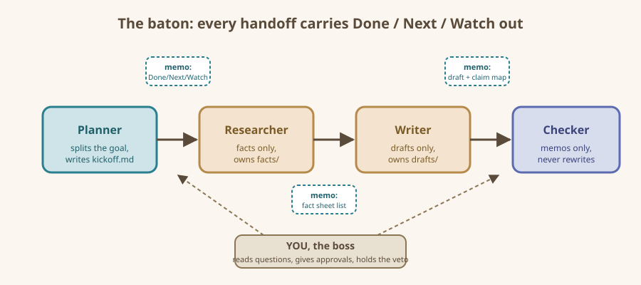

On this page: The one-job rule - The standard roster - Why roles must "own a file" - The handoff memo - Handoffs between agent types - Kickoff: the first memo, written by you - The baton diagram - Common beginner mistakes - Recap card
Roles and Handoffs
One job each, and a proper note when the baton changes hands.
The one-job rule
Every agent gets one role, one input, one output. Not one goal — one role. "Help with the book launch" is a goal. "Write three social-media post drafts from the fact sheet" is a role. The tighter you define the role, the less your agents wander and the less you chase them.
A useful job description fits the top of a single index card:
- Who am I? (the checker. fresh eyes, skeptical.)
- What do I receive? (draft files in the drafts folder)
- What do I produce? (a review memo: approved, or a punch-list of fixes)
- What do I never do? (I do not rewrite the draft myself)
That last line matters more than beginners expect. The checker that "helpfully rewrites" destroys the one thing it exists to provide: an outside opinion.
The standard roster
| Role | One-line job | Typical output |
|---|---|---|
| Planner | Split the goal into small jobs; write the kickoff memo | kickoff.md |
| Researcher | Collect facts, only facts, from named sources | fact sheets |
| Writer | Turn fact sheets into polished drafts | draft files |
| Checker | Compare drafts against facts; approve or bounce back | review memo |
| Recorder | Keep the log of who did what and what was decided | log.md |
You will rarely need all five. Most projects in this book use three: one Planner, one or two Workers, one Checker. The Recorder role is just an agent who keeps a tidy log — a real timesaver on jobs that run more than a day.
Why roles must "own a file"
In a real office, a person owns a desk, a drawer, a specific report. Agents work the same way: a role is not fully defined until it owns a particular file. The Researcher owns the fact sheet. The Writer owns the draft. Nobody else edits those files — they leave notes instead. This rule, called one writer per file, prevents the classic disaster of two agents "improving" the same draft at the same time until it contradicts itself. It is covered hands-on in the next chapter.
The handoff memo
A handoff is not "here, take the folder." A handoff is a short note with three sections. Copy this shape every single time:
- Done — what I did, in two sentences, with file names.
- Next — what you are asked to do with it, in one sentence.
- Watch out — anything uncertain, missing, or of which you are suspicious.
Here is a real-shaped example from a later project:
- Done: Researched all five guitar pedals (fact sheets in
facts/pedal-01.mdthroughfacts/pedal-05.md). Three have verifiable specs from manufacturer pages; two do not. - Next: Writer, draft eBay listings for all five, one per file, using only the fact-sheet fields.
- Watch out: Pedals 2 and 4 have no listed weights. Mark unknown as "not stated," do not guess.
Notice what the memo does not contain: small talk, history, or the researcher's feelings. Past conversation never rides along; only the note does. That is deliberate. Agents cannot remember your last chat anyway — the memo is the team's working memory.
Handoffs between agent types
The shape above works no matter what tools you use to "hire" agents:
- Web chats: open a chat per role. Paste the handoff memo as the first message, together with the file contents. It feels manual because it is — and that is fine, because you stay the boss.
- Agentic coding tools (opencode, Claude Code, Copilot-style assistants): many can define subagents with roles, so the same memo becomes the role description plus a task message.
- MCP-connected agents (see the companion handbook): the agents can read the shared folder themselves; your memo only needs to name the files.
Kickoff: the first memo, written by you
Before any agent does anything, you write the kickoff — or have your Planner agent draft it for your approval. Keep it to five lines:
- Goal: one sentence, plain.
- Definition of done: what existence of success looks like (e.g., "five listings, each checked against its fact sheet, my thumbs-up").
- Roster: names of the roles and who fills them (chat window 2 = researcher, etc.).
- Folder: where the shared files live.
- Rule of the house: one writer per file; checkers never rewrite; when in doubt, stop and write a note to the boss (you).
The "when in doubt, stop and note the boss" line is your steering wheel. Teams never guess silently: they stop and annotate. Reward that behavior by reading and answering the notes.
The baton diagram

Common beginner mistakes
- Rubber-stamping: skipping review "because it's only a draft." Drafts are where agents plant the errors they expect you to catch later; review the drafts more, not less.
- Role soup: assigning one agent "plan + research + write + check." Split it, even if it costs you three chat windows.
- Memo amnesia: forgetting the Watch out section. That section is what saves your weekends; the Done section is flattery you can skim.
- Meeting by voice: discussing the work verbally with one agent in one conversation, then expecting another agent to "just know it." If it is not in the folder, it did not happen.
Recap card
- One agent = one role, one input, one output.
- Every role owns a file; only the owner writes it.
- Every handoff = Done / Next / Watch out.
- You are always the boss; agents escalate by stopping and writing you a note.